Overview Sistem
SALIMS (Sistem Administrasi Laboratorium) adalah sistem terintegrasi yang mengelola seluruh proses bisnis laboratorium pengujian, mulai dari pendaftaran pelanggan hingga penerbitan Laporan Hasil Uji (LHU). Sistem ini dirancang untuk mengoptimalkan alur kerja, meningkatkan akurasi data, dan memastikan kepatuhan terhadap standar kualitas laboratorium.
Fitur Utama:
- Manajemen Pelanggan: Pendaftaran dan manajemen data pelanggan
- Administrasi Sampel: Pengelolaan permintaan pengujian dan sampel
- Manajemen Pengujian: Proses pengujian dari persiapan hingga hasil
- Manajemen Pembayaran: Verifikasi dan konfirmasi pembayaran
- Manajemen Persediaan: Pengelolaan bahan uji dan persediaan
- Manajemen Aset: Pemeliharaan dan kalibrasi peralatan
- Integrasi Data: Integrasi dengan sistem eksternal (CIS)
Business Process Overview
Sistem SALIMS terdiri dari 4 proses bisnis utama yang saling terintegrasi:
Proses Bisnis Utama:
- Administrasi Sampel Uji ↔ Penanganan Sampel: Penyerahan Sampel Uji & Penyerahan Hasil Uji
- Penanganan Sampel ↔ Manajemen Persediaan: Penggunaan Bahan Uji & Penyerahan Bahan Uji
- Penanganan Sampel ↔ Manajemen Aset: Penggunaan Peralatan Uji & Informasi Peralatan Uji
- Integrasi Data: Menerima data dari semua proses bisnis utama
Proses Bisnis Detail
1. Pendaftaran Pelanggan
Deskripsi: Proses pendaftaran pelanggan baru melalui portal pelanggan dengan verifikasi data oleh admin.
- Pelanggan: Melakukan pendaftaran dan mengisi data
- Admin: Verifikasi data pendaftaran
Alur Proses:
- Mulai → Pelanggan memulai proses pendaftaran
- Melakukan Pendaftaran Pelanggan Pada Portal Pelanggan - Pelanggan mengakses portal dan memulai pendaftaran
- Mengisi Data Pelanggan - Pelanggan mengisi formulir pendaftaran dengan data lengkap
- Akses Data (Intermediate Event) - Data pendaftaran diakses oleh sistem untuk verifikasi
- Verifikasi Data Pendaftaran (Admin) - Admin memverifikasi kelengkapan dan kebenaran data
- Decision: Data Lengkap?
- Tidak: Kembali ke langkah 3 (Mengisi Data Pelanggan)
- Ya: Lanjut ke langkah 7
- Menerima Informasi Pendaftaran Disetujui - Pelanggan menerima notifikasi persetujuan pendaftaran
- Selesai
- Data pelanggan terdaftar dalam sistem
- Status pendaftaran: Disetujui
- Data harus lengkap dan valid sebelum disetujui
- Pelanggan dapat memperbaiki data jika ditolak
2. Administrasi Sampel Uji
Deskripsi: Proses administrasi lengkap dari permintaan pengujian sampel hingga penerbitan LHU, melibatkan pelanggan, customer service admin, dan technical manager.
- Pelanggan: Mengajukan permintaan, melakukan pembayaran, menerima hasil
- Pelayanan Kepada Pelanggan Admin: Menganalisa permintaan, mengelola pembayaran, menyiapkan dokumen
- Manajer Teknis: Melakukan KUP, menganalisa permintaan pengujian, membuat jadwal pengambilan sampel
Alur Proses:
Fase 1: Pendaftaran dan Analisa Permintaan
- Mulai → Pelanggan memulai proses
- Melakukan Pendaftaran Pelanggan - Jika belum terdaftar
- Decision: Pelanggan Sudah Terdaftar? - Jika tidak, kembali ke langkah 2
- Mengisi Form Permintaan Pengujian Sampel
📱 Implementasi Sistem: Form "Testing Order" di modul Sample Handling
Request Details: Request Number, Request Date, Periode, Customer, Request By, Description
Section SAMPLE: Menambahkan data sampel yang akan diuji (Sample No, Sample Name, Version, Service Type, Sample Category, Zona Name, Sub Zona Name, Is Acceleration, Subtotal Price)
Section QUALITY REFERENCE: Menambahkan referensi kualitas untuk sampel (Quality Reference Name, Description) - digunakan sebagai standar acuan kualitas
Section PARAMETER: Menambahkan parameter pengujian yang akan dilakukan (Parameter Name, Method ID, In Situ, Price) - menentukan jenis pengujian dan metode yang digunakan📸 Screenshot: Form Testing Order
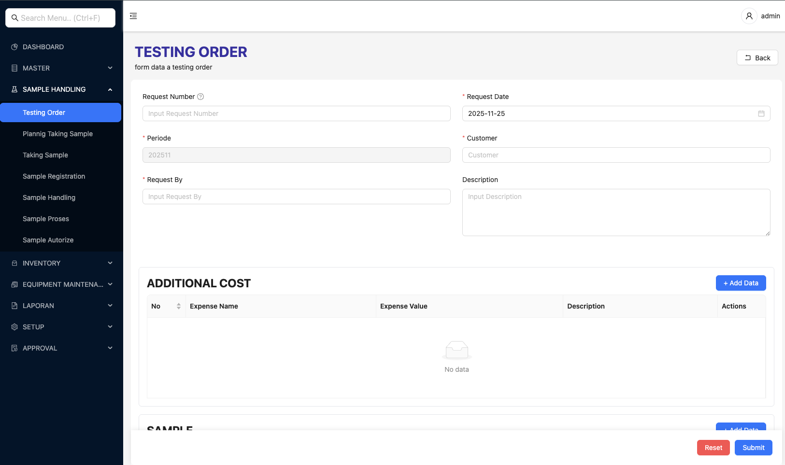Catatan: Screenshot menunjukkan form Testing Order dengan section SAMPLE, QUALITY REFERENCE, dan PARAMETER
- Menganalisa Permintaan (Admin)
- Approval Testing Order - Lihat detail di Proses 12: Proses Approval
- Kaji Ulang Permintaan (KUP) (Manajer Teknis)
- Hasil KUP (Message Event)
- Decision: Dapat Dilakukan Pengujian?
- Decision: Lanjutkan Proses Pengujian?
Fase 2: Pembayaran
- Decision: Pelanggan Non MoU (Pra-Bayar)?
- Mengkalkulasi Biaya Pengujian (jika diperlukan)
📱 Implementasi Sistem: Bagian "Additional Cost" dan "Detail Price" di form Testing Order
Section ini mencakup: Additional Cost (biaya tambahan), Detail Price (Gross, Discount, DPP, VAT, PPH, NET) untuk kalkulasi total biaya pengujian. - Menerbitkan Tagihan
- Melakukan Pembayaran (Pelanggan)
- Verifikasi Pembayaran (Admin)
Fase 3: Pengambilan Sampel dan Dokumen
- Menyiapkan Dokumen Pengajuan (Admin)
- Decision: Sampel Dibawa Pelanggan?
- Ya: Mengirim Bukti Penerimaan Pengajuan
- Tidak: Membuat Jadwal Pengambilan Sampel
Fase 4: Proses Pengujian dan LHU
- Proses Pengujian Selesai (Message Event)
- Memberikan LHU (Admin)
- Selesai
- Permintaan pengujian terdaftar
- Tagihan (jika diperlukan)
- Bukti pembayaran
- Bukti penerimaan pengajuan
- LHU (Laporan Hasil Uji)
3. Kaji Ulang Permintaan (KUP)
Deskripsi: Proses review teknis untuk menentukan kelayakan permintaan pengujian berdasarkan ketersediaan peralatan, bahan uji, analis, dan metode uji.
- Manager Teknis: Menganalisa ketersediaan peralatan dan bahan uji
- Analis: Menganalisa ketersediaan analis dan metode uji
Alur Proses:
- Mulai → Trigger dari proses Administrasi Sampel Uji
- Menganalisa Permintaan Pengujian (Manager Teknis)
- Parallel Gateway (Split) → Tiga proses paralel:
- Path 1: Ketersediaan Peralatan
- Path 2: Ketersediaan Bahan Uji
- Path 3: Ketersediaan Analis dan Metode Uji
- Parallel Gateway (Join) - Semua path bergabung
- Hasil KUP (Message Event)
- Selesai
- Hasil KUP (Kaji Ulang Permintaan)
- Status ketersediaan: Dapat/Tidak Dapat Dilakukan Pengujian
4. Verifikasi Pembayaran
Deskripsi: Proses verifikasi pembayaran pelanggan dengan integrasi ke sistem CIS (Customer Information System) untuk mendapatkan data pembayaran.
- Admin: Melakukan verifikasi pembayaran
- Data Integration (API CIS): Menyediakan data pembayaran
Alur Proses:
- Mulai → Admin memulai proses verifikasi
- Menkonfirmasi Pembayaran Atas Nomor Permohonan Pengujian
- Melakukan Pencarian Data Pembayaran
- Decision: Terhubung dengan CIS?
- Tidak: Kembali ke langkah 3 (retry)
- Ya: Lanjut ke langkah 5
- Menerima Data Pembayaran (dari API CIS)
- Selesai
5. Pengambilan Sampel
Deskripsi: Proses pengambilan sampel di lapangan, termasuk persiapan peralatan, kalibrasi, pencetakan barcode, dan pengujian in-situ jika diperlukan.
- Pengambilan Sampel (PPS): Tim yang melakukan pengambilan sampel
- Admin Persediaan: Mengkonfirmasi penggunaan peralatan dan bahan uji
Alur Proses:
- Skedul Pengambilan Sampel (Timer Start Event)
- Planning Taking Sample (Perencanaan Pengambilan Sampel)
📱 Implementasi Sistem: Form "Planning Taking Sample" di modul Sample Handling
Planning Details: Planning Taking Sample Number, Request Number (dari Testing Order), PTS Date, Periode, Description
Section SAMPLE: Data sampel yang akan diambil dengan status:- Equipment Sample Status - Status ketersediaan peralatan untuk sampel
- Equipment Parameter Status - Status ketersediaan peralatan untuk parameter
- Labour Status - Status ketersediaan tenaga kerja
- Product Status - Status ketersediaan produk/bahan
Section LABOUR: Daftar tenaga kerja yang akan ditugaskan (Labour Name, Hold Duration)
Section PARAMETER: Parameter pengujian yang akan dilakukan (Parameter Name, Standard Duration)📸 Screenshot: Form Planning Taking Sample
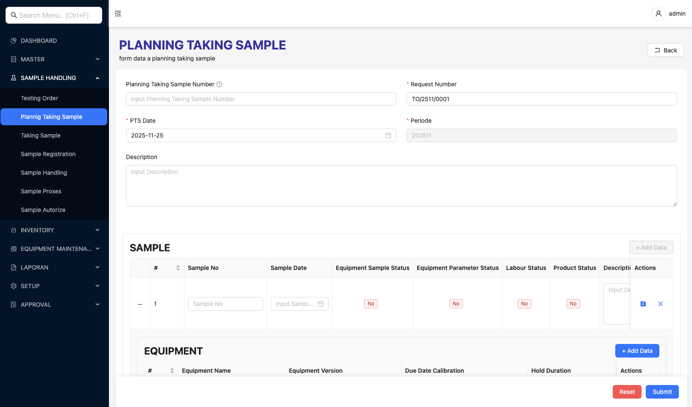Catatan: Form ini digunakan untuk merencanakan pengambilan sampel dengan menentukan peralatan, tenaga kerja, dan parameter yang diperlukan
- Mengecek Permintaan Pengambilan Sampel Uji
- Parallel Gateway (Split) → Dua persiapan paralel:
- Persiapan Peralatan Uji
- Persiapan Bahan Uji
- Mengkonfirmasi Penggunaan Peralatan dan Bahan Uji (Admin Persediaan)
- Decision: Perlu Dikalibrasi?
- Ya: Melakukan Kalibrasi
- Tidak: Langsung ke langkah berikutnya
- Melakukan Print Barcode Permintaan Pengujian
- Sub-process: Pengambilan Sampel Dilapangan
- Melakukan Pengambilan Sampel
📱 Implementasi Sistem: Form "Taking Sample" di modul Sample Handling
Taking Sample Details:- Taking Sample Number, Periode, Taking Sample Date
- Planning Taking Sample Number - Relasi dengan Planning Taking Sample
- Sample Code, Sample No
- Geo Tag - Koordinat GPS lokasi pengambilan
- Address - Alamat lokasi pengambilan sampel
- Weather - Kondisi cuaca saat pengambilan
- Wind Direction - Arah angin
- Temperatur - Suhu saat pengambilan
Additional Data: Description, Parameter pengujian, Foto sampel (upload)📸 Screenshot: Form Taking Sample
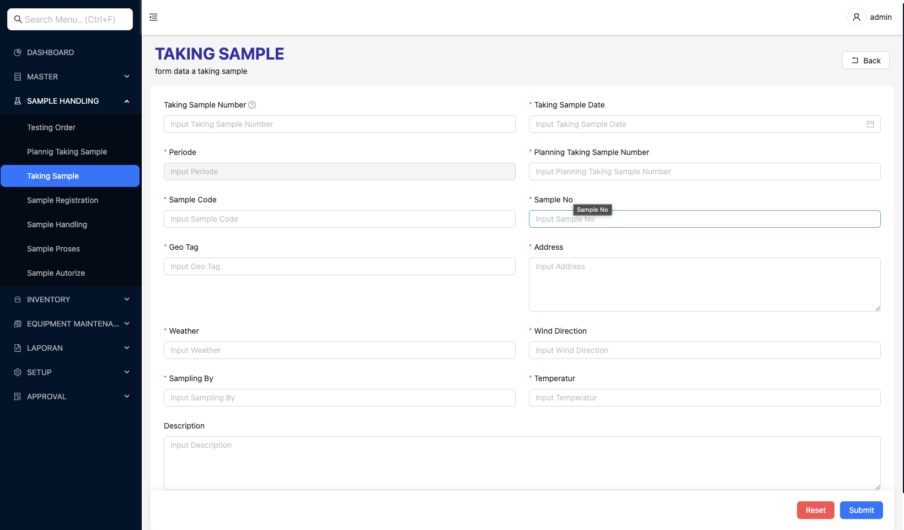Catatan: Form ini digunakan untuk mencatat data pengambilan sampel aktual di lapangan, termasuk lokasi (GPS), kondisi cuaca, dan informasi lain yang diperlukan untuk traceability
- Decision: Permintaan Pengujian In-situ?
- Ya: Melakukan Pengujian In-situ
- Tidak: Langsung ke langkah berikutnya
- Mencatat Informasi Sampel Sesuai dengan Label
- Melakukan Pengambilan Sampel
- Membawa Sampel Ke Laboratorium
- Selesai
- Sampel yang telah diambil dan dilabeli
- Data pengambilan sampel
- Hasil pengujian in-situ (jika ada)
- Barcode untuk tracking
6. Pengolahan Sampel
Deskripsi: Proses pengolahan sampel setelah diterima di laboratorium, termasuk pembagian sampel, penambahan bahan, pendinginan, dan penyimpanan.
- Admin: Melakukan pengolahan sampel
Alur Proses:
- Mulai → Sampel diterima di laboratorium
- Menganalisa Permohonan Pengujian
- Membagi Sampel Berdasarkan Parameter Uji
- Parallel Gateway (Split) → Tiga proses paralel:
- Menambahkan Bahan
- Mendinginkan Sampel
- Menyimpan Sampel
- Parallel Gateway (Join) - Semua proses selesai
- Pengolahan Sample (Message End Event)
- Selesai
- Sampel yang telah diolah dan siap untuk pengujian
- Sampel yang telah dibagi sesuai parameter
- Sampel yang telah disimpan dengan kondisi yang tepat
7. Penanganan Sampel
Deskripsi: Proses penanganan sampel dari penerimaan hingga verifikasi LHU, melibatkan multiple role dengan quality control di setiap tahap.
- PPS: Pengambilan sampel
- Manager Teknis: Menerima sampel, verifikasi LHU
- Penyelia (Supervisor): Konfirmasi pengolahan dan hasil uji
- Analis: Persiapan dan pelaksanaan pengujian
- Admin: Pengolahan sampel dan penerimaan LHU
Alur Proses:
Fase 1: Penerimaan dan Pengolahan
- Jadwal Pengambilan Sampel (Timer Start Event)
- Pengambilan Sampel (Sub-process)
- Contoh Uji Diterima (Message Catching Event)
- Menerima Contoh Uji (Disposisi Teknis) (Manager Teknis)
- Pengolahan Sampel (Sub-process, Admin)
- Sample Handling (Penanganan Sampel)
📱 Implementasi Sistem: Form "Sample Handling" di modul Sample Handling
Sample Handling Details:- SS Number (Sample Handling Number), SS Date, Period
- SR Number (Sample Registration Number) - Relasi dengan Sample Registration
- Sample Code, Sample No, Sample Version
- Labour Code - Kode tenaga kerja yang menangani sampel
- Description
- Test ID - ID pengujian
- Unit Code - Kode satuan
- Quantity - Jumlah
- Description - Deskripsi detail
- Parameter Code - Kode parameter yang akan diuji
📸 Screenshot: Form Sample Handling
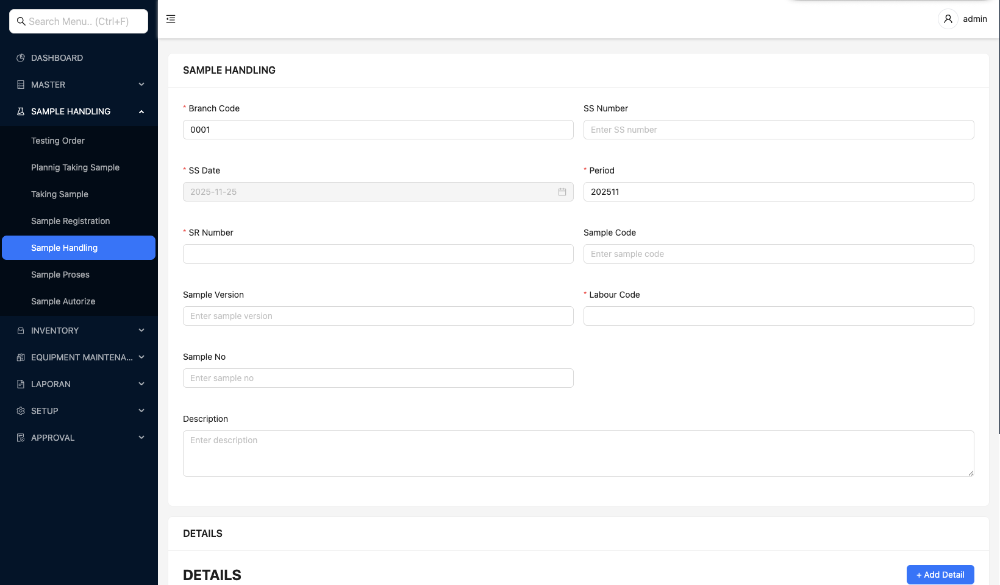Catatan: Form ini digunakan untuk mencatat penanganan sampel setelah diterima di laboratorium, termasuk detail pengujian yang akan dilakukan untuk setiap parameter
Fase 2: Konfirmasi Pengolahan
- Mengkonfirmasi Pengolahan Sampel (Penyelia)
- Decision: Memenuhi Syarat?
- Tidak: Hasil Pengujian External Diterima
- Ya: Lanjut ke Persiapan Pengujian
Fase 3: Pengujian
- Persiapan Pengujian (Sub-process, Analis)
- Melakukan Pengujian dan/atau Mencatat Hasil Pengujian (Analis)
📱 Implementasi Sistem: Form "Sample Proses" (Testing Process) di modul Sample Handling
Process Details:- Branch Code, Period, Process Date
- SR Number (Sample Registration Number) - Relasi dengan Sample Registration
- SS Number (Sample Handling Number) - Relasi dengan Sample Handling
- Test ID - ID pengujian yang akan dilakukan
- Execute Date - Tanggal pelaksanaan pengujian
- Duration - Durasi pengujian
- Metspec - Spesifikasi metode pengujian
- Description
- Product Code, Product Version, Unit Code
- Batch No - Nomor batch produk
- Warehouse Code, Location Code - Lokasi penyimpanan
- Product Qty, Product Qty Use - Jumlah produk yang digunakan
- Exp Date - Tanggal kadaluarsa
Section FORMULAS: Formula pengujian (Formula Code, Version, Formula Result, L Spec, U Spec, Parameter, Parameter Result)
Section EQUIPMENT: Peralatan yang digunakan (Equipment Code, Version, Due Date Calibration, Hold Duration)📸 Screenshot: Form Sample Proses (Testing Process)
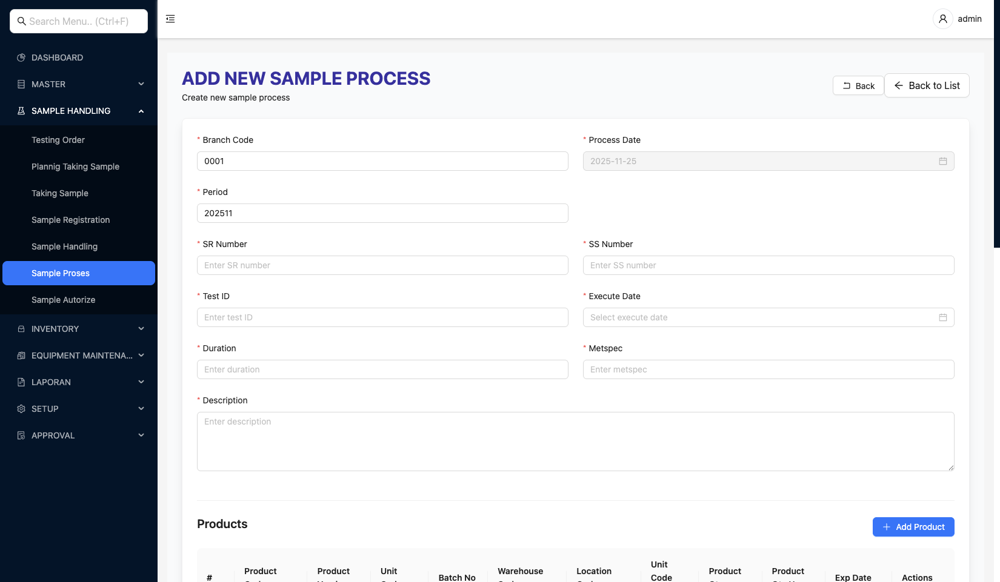Catatan: Form ini digunakan untuk mencatat proses pengujian sampel, termasuk produk yang digunakan, tenaga kerja, formula pengujian, dan peralatan yang diperlukan
- Mengkonfirmasi Hasil Uji (Penyelia)
- Decision: Memenuhi Syarat?
- Tidak: Kembali ke pengujian (re-test)
- Ya: Lanjut ke verifikasi LHU
Fase 4: Verifikasi LHU
- Sample Autorize (Otorisasi Sampel / Testing Review)
📱 Implementasi Sistem: Form "Sample Autorize" (Testing Review) di modul Sample Handling
Review Details:- Branch Code, Review Date, Period
- SR Number (Sample Registration Number) - Relasi dengan Sample Registration
- Product Code - Kode produk yang diuji
- Description
- Process Number - Nomor proses pengujian (dari Sample Proses)
- Description - Deskripsi review
- Is Taken - Status apakah hasil sudah diambil/disetujui
📸 Screenshot: Form Sample Autorize (Testing Review)
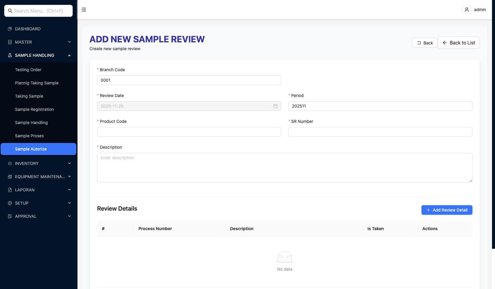Catatan: Form ini digunakan untuk melakukan review dan otorisasi hasil pengujian. Setiap proses pengujian (Process Number) direview dan disetujui sebelum lanjut ke verifikasi LHU
- Verifikasi LHU (Manager Teknis)
- Decision: Memenuhi Syarat?
- Tidak: Kembali ke pengujian (re-test)
- Ya: Menerima LHU (Admin)
- Selesai
- Konfirmasi Pengolahan Sampel (Penyelia)
- Konfirmasi Hasil Uji (Penyelia)
- Verifikasi LHU (Manager Teknis)
8. Persiapan Pengujian
Deskripsi: Proses persiapan sebelum pengujian dimulai, termasuk persiapan peralatan, bahan uji, konfirmasi penggunaan, dan kalibrasi jika diperlukan.

- Analis: Melakukan persiapan peralatan, bahan uji, dan kalibrasi
- Admin Persediaan: Mengkonfirmasi penggunaan peralatan dan bahan uji
Alur Proses:
- Skedul Pengambilan Sampel (Timer Start Event)
- Mengecek Permintaan Pengambilan Sampel Uji
- Parallel Gateway (Split) → Dua persiapan paralel:
- Melakukan Persiapan Peralatan Uji
- Melakukan Persiapan Bahan Uji
- Mengkonfirmasi Penggunaan Peralatan dan Bahan Uji (Admin Persediaan)
- Decision: Perlu Dikalibrasi?
- Ya: Melakukan Kalibrasi
- Tidak: Langsung ke Selesai
- Selesai
- Peralatan siap digunakan
- Bahan uji siap digunakan
- Peralatan terkalibrasi (jika diperlukan)
9. Penerbitan LHU
Deskripsi: Proses penerbitan LHU (Laporan Hasil Uji) yang melibatkan verifikasi pembayaran, kalkulasi biaya (jika diperlukan), penerbitan tagihan, konfirmasi pembayaran, dan pengiriman LHU kepada pelanggan.

- Admin: Mengecek pembayaran, mengkalkulasi biaya, menerbitkan tagihan, mengkonfirmasi pembayaran, memberikan LHU hard copy
- Pelanggan: Mengakses portal, mengecek status, melakukan pembayaran, mengisi feedback, mengunduh LHU soft copy
- Data Integration (API CIS): Menyediakan data pembayaran
Alur Proses - Path Admin:
- Mulai → Admin memulai proses
- Melakukan Pengecekan Data Pembayaran
- Decision: Pelanggan MoU (Pasca-Bayar) dan Ditemukan Biaya?
- Ya: Mengkalkulasi Biaya Pengujian → Menerbitkan Tagihan
- Tidak: Langsung ke Menerbitkan Tagihan
- Menkonfirmasi Pembayaran (Trigger dari Pelanggan)
- Melakukan Pencarian Data Pembayaran
- Decision: Data Ditemukan?
- Tidak: Kembali ke langkah 4
- Ya: Menerima Data Pembayaran (dari API CIS)
- Decision: Data Feedback Ditemukan?
- Tidak: Mengisi Feedback
- Ya: Langsung ke langkah berikutnya
- Menerima LHU (Hard Copy)
- Selesai
Alur Proses - Path Pelanggan:
- Mulai → Pelanggan memulai proses
- Mengakses Portal Pelanggan
- Decision: Status Pengujian Selesai?
- Tidak: Kembali ke langkah 2
- Ya: Pengecekan Data Pembayaran
- Decision: Data Pembayaran Ditemukan?
- Tidak: Melakukan Pembayaran → Kembali ke langkah 3
- Ya: Decision: Data Feedback Ditemukan?
- Decision: Data Feedback Ditemukan?
- Tidak: Mengisi Feedback
- Ya: Langsung ke langkah berikutnya
- Mengunduh LHU (Soft Copy)
- Selesai
- Tagihan (jika diperlukan)
- Konfirmasi pembayaran
- LHU Hard Copy (untuk Admin)
- LHU Soft Copy (untuk Pelanggan)
- Feedback (jika diisi)
Form Laporan:
Print Form LHU (Laporan Hasil Uji)
Fungsi: Form ini digunakan untuk mencetak dan melihat preview Laporan Hasil Uji (LHU), termasuk:
- Nomor Laporan - Nomor laporan hasil uji
- Judul Pengujian - Judul atau jenis pengujian yang dilakukan
- Informasi Laboratorium - Logo, nama, alamat, dan kontak laboratorium
- Informasi Pelanggan - Nama dan alamat pelanggan
- Informasi Sampel - Kode contoh uji, metode pengambilan, tanggal pengambilan
- Informasi Analisa - Tempat analisa, tanggal analisa
- Tabel Hasil Pengujian - Parameter, satuan, standar maksimal, hasil, limit deteksi, metode analisa, keterangan
📸 Screenshot: Form Print Form LHU
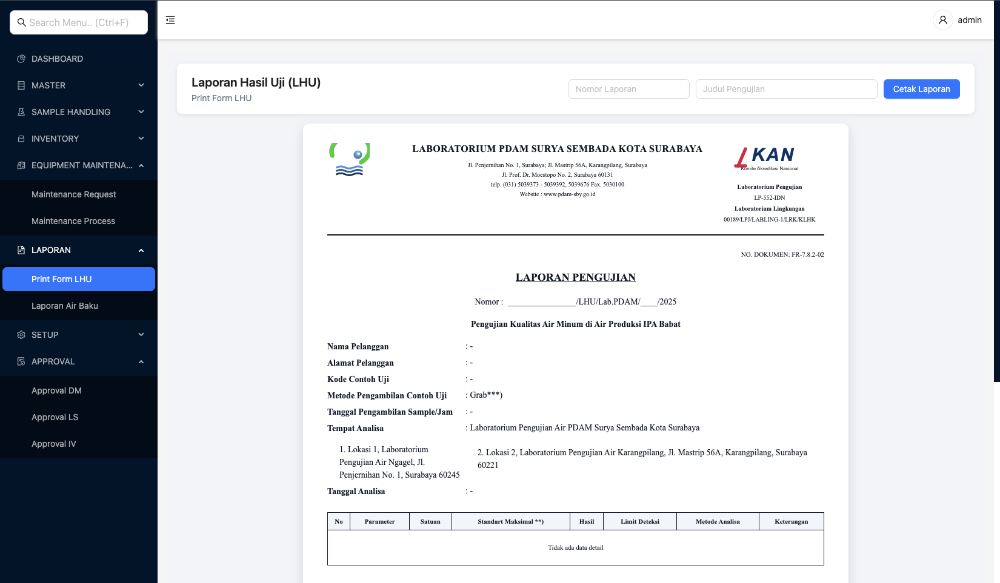Catatan: Form ini digunakan untuk mencetak dan melihat preview Laporan Hasil Uji (LHU). LHU berisi informasi lengkap tentang hasil pengujian sampel.
Laporan Air Baku:
Laporan Air Baku (Raw Water Report)
Fungsi: Form ini digunakan untuk membuat dan mencetak laporan pengujian kualitas air permukaan, termasuk:
- Filter Customer - Filter berdasarkan pelanggan
- Range Tanggal - Filter berdasarkan tanggal mulai dan tanggal akhir
- Informasi Laporan - Nomor laporan, judul pengujian (contoh: "Pengujian kualitas air permukaan IPAM Ngagel")
- Informasi Pelanggan - Nama dan alamat pelanggan
- Informasi Sampel - Kode contoh uji, metode pengambilan, tanggal pengambilan
- Informasi Analisa - Tempat analisa, tanggal analisa
- Tabel Hasil Pengujian - Parameter (TDS, Kesadahan, Magnesium, Chlorida, dll), satuan, standar maksimal, hasil, limit deteksi, metode analisa, keterangan
📸 Screenshot: Form Laporan Air Baku
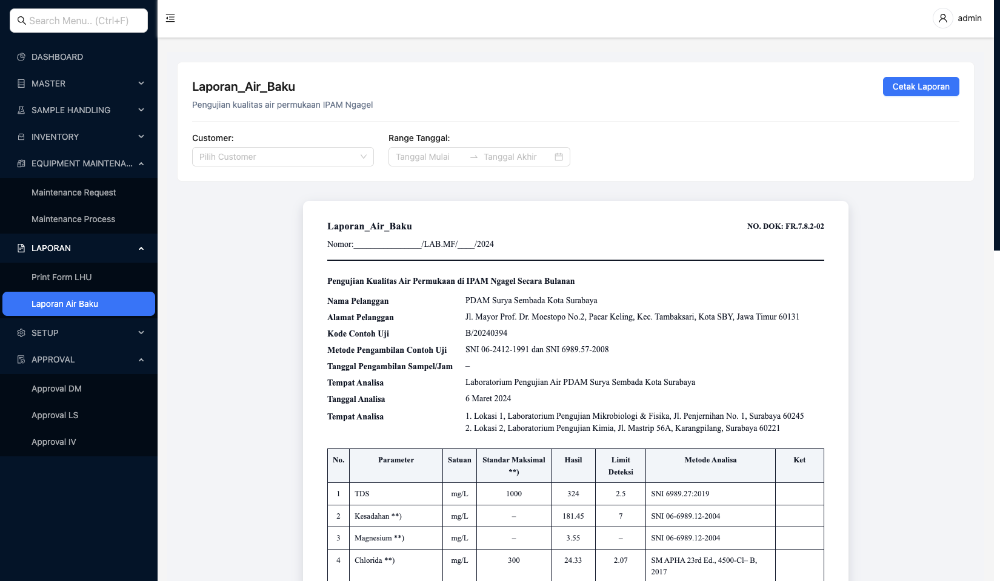Catatan: Form ini khusus digunakan untuk laporan pengujian kualitas air permukaan yang dilakukan secara berkala (bulanan). Laporan ini membantu dalam monitoring kualitas air baku di IPAM.
10. Manajemen Persediaan
Deskripsi: Proses manajemen persediaan bahan uji, termasuk stock opname, monitoring batas minimum, rekonsiliasi, dan disposal bahan kadaluarsa.

- Admin Persediaan: Melakukan stock opname, monitoring, rekonsiliasi, update data
- Penyelia (Supervisor): Mengkonfirmasi hasil rekonsiliasi
Alur Proses:
- Mulai → Admin memulai proses
- Membuat Daftar Persediaan
- Periode StockOpname (Timer Event)
- Parallel Gateway (Split) → Dua proses paralel:
- Path 1: Stock Opname
- Melakukan Stok Opname
- Decision: Terdapat Perbedaan Data?
- Tidak: Langsung ke Selesai
- Ya: Menuju ke Parallel Join
- Path 2: Cek Minimum Inventory
- Mengecek Batas Minimum Persediaan
- Decision: Terdapat Persediaan yang Mencapai Batas Bawah?
- Tidak: Langsung ke Selesai
- Ya: Menuju ke Parallel Join
- Path 1: Stock Opname
- Parallel Gateway (Join) - Bergabung jika ada perbedaan atau batas bawah
- Melakukan Rekap
- Mengkonfirmasi Hasil Recap (Penyelia)
- Memperbarui Data Persediaan
📱 Implementasi Sistem: Form "Transfer Warehouse" di modul Inventory
Transfer Details:- Transaction Index, AD Number (Adjustment Number), AD Date, AD Type
- Branch Code, Period
- Warehouse Code - Warehouse sumber
- Location Code - Lokasi sumber
- Reference Number - Nomor referensi transfer
- Description
- User - User yang melakukan transfer
📸 Screenshot: Form Transfer Warehouse
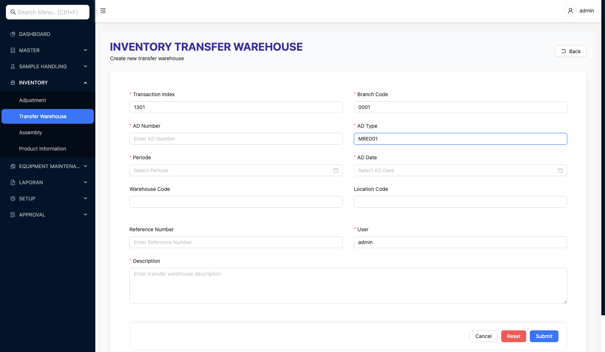Catatan: Form ini digunakan untuk transfer persediaan antar warehouse, termasuk update data persediaan di warehouse sumber dan tujuan
- Decision: Kadaluarsa?
- Tidak: Langsung ke Selesai
- Ya: Disposal Bahan Uji → Selesai
Operasi Inventory Tambahan:
Assembly (Perakitan Produk)
Assembly Details:
- Branch Code, Transaction Index, User Created
- Assembly Number, Period, Assembly Date
- Product Code - Produk hasil perakitan
- BOM Code - Bill of Materials yang digunakan
- Assembly By - Personel yang melakukan perakitan
- Quantity - Jumlah produk yang dirakit
- Expiry Date - Tanggal kadaluarsa produk hasil
- Destination Warehouse Code - Warehouse tujuan
- Destination Location Code - Lokasi tujuan
- Unit Code - Satuan produk
- Description
- Product Version - Versi komponen
- Warehouse Code, Location Code - Lokasi komponen
- Product Code - Kode komponen
- Batch No - Nomor batch komponen
- Unit Code, Unit Code Use - Satuan komponen
- Product Qty - Jumlah komponen yang digunakan
📸 Screenshot: Form Assembly
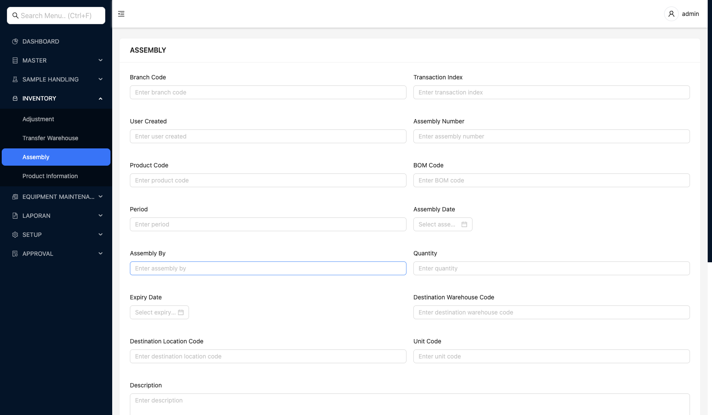Catatan: Form ini digunakan untuk perakitan produk dari komponen-komponen berdasarkan BOM, termasuk update persediaan komponen dan produk hasil perakitan
Informasi Produk:
Product Information (Informasi Produk)
Fungsi: Form ini digunakan untuk melihat dan mengelola informasi produk di inventory, termasuk:
- Product Code, Product Name, Product Version
- Product Type, Product Category
- Warehouse Code, Location Code - Lokasi penyimpanan
- Unit Code - Satuan produk
- Batch No - Nomor batch
- Product Qty - Jumlah persediaan
- Exp Date - Tanggal kadaluarsa
- Min Stock - Batas minimum persediaan
- Shelf Life - Masa simpan
- Manufacture Code - Kode pabrikan
- Building Code - Kode gedung
- Description - Deskripsi produk
📸 Screenshot: Form Product Information
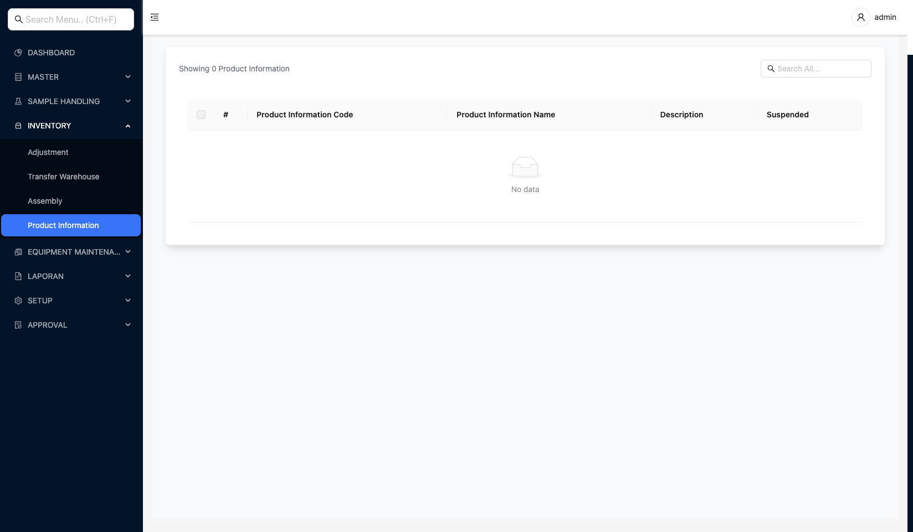Catatan: Form ini digunakan untuk melihat dan mengelola informasi produk di inventory, membantu dalam monitoring dan tracking persediaan
- Daftar persediaan terbaru
- Hasil stock opname
- Data rekonsiliasi
- Data persediaan yang diperbarui
- Bahan kadaluarsa yang telah didisposal
- Produk hasil perakitan (Assembly)
11. Manajemen Aset
Deskripsi: Proses manajemen aset peralatan laboratorium, termasuk pemeliharaan rutin dan kalibrasi peralatan.
- Analis: Membuat daftar peralatan, jadwal pemeliharaan, melakukan pemeriksaan dan pemeliharaan, membuat laporan kerusakan, membuat riwayat peralatan
- Manajemen Aset Supervisor: Membuat program kalibrasi, mengajukan permintaan kalibrasi, melakukan pemutakhiran data peralatan
- Manajer Lab: Mengkonfirmasi permintaan kalibrasi
- Internal/External Kalibrasi: Melakukan kalibrasi peralatan
Alur Proses - Process 1: Equipment Maintenance
- Mulai → Analis memulai proses
- Membuat Daftar Peralatan
- Membuat Jadwal Pemeliharaan
- Jadwal Pemeriksaan dan Pemeliharaan (Data Store)
- Melakukan Pemeriksaan dan Pemeliharaan
- Decision: Alat Rusak?
- Ya: Membuat Laporan Kerusakan → Update Status Peralatan → Selesai
- Tidak: Membuat Riwayat Peralatan → Selesai
Maintenance Request (Permintaan Pemeliharaan):
Maintenance Request Form
Fungsi: Form ini digunakan untuk membuat permintaan pemeliharaan peralatan, termasuk:
- MR Number - Nomor permintaan pemeliharaan (auto-generate atau manual)
- Branch Code - Kode cabang
- Period - Periode transaksi
- MR Date - Tanggal permintaan pemeliharaan
- Equipment Code - Kode peralatan yang akan dipelihara
- Equipment Version - Versi peralatan
- Description - Deskripsi permintaan pemeliharaan (alasan, detail kerusakan, dll)
- User Created - User yang membuat permintaan
- Transaction Status - Status transaksi
- Approval Status - Status persetujuan
- Is Auto No - Flag untuk auto-generate nomor
📸 Screenshot: Form Maintenance Request
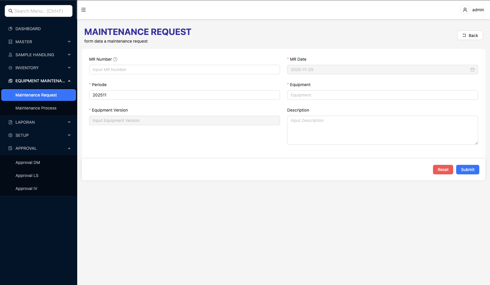Catatan: Form ini digunakan untuk membuat permintaan pemeliharaan peralatan. Setelah dibuat, maintenance request akan dilanjutkan ke proses maintenance process untuk eksekusi pemeliharaan.
Maintenance Process (Proses Pemeliharaan):
Maintenance Process Form
Fungsi: Form ini digunakan untuk mengeksekusi proses pemeliharaan peralatan berdasarkan Maintenance Request yang telah dibuat, termasuk:
- MP Number - Nomor proses pemeliharaan (auto-generate atau manual)
- Branch Code - Kode cabang
- Period - Periode transaksi
- MP Date - Tanggal proses pemeliharaan
- Maintenance Request - Referensi ke Maintenance Request yang akan diproses (MR Number)
- Status - Status proses pemeliharaan (dalam proses, selesai, dll)
- Description - Deskripsi proses pemeliharaan yang dilakukan (tindakan yang diambil, hasil pemeriksaan, dll)
- User Created - User yang membuat proses pemeliharaan
- Transaction Status - Status transaksi
- Approval Status - Status persetujuan
- Is Auto No - Flag untuk auto-generate nomor
📸 Screenshot: Form Maintenance Process
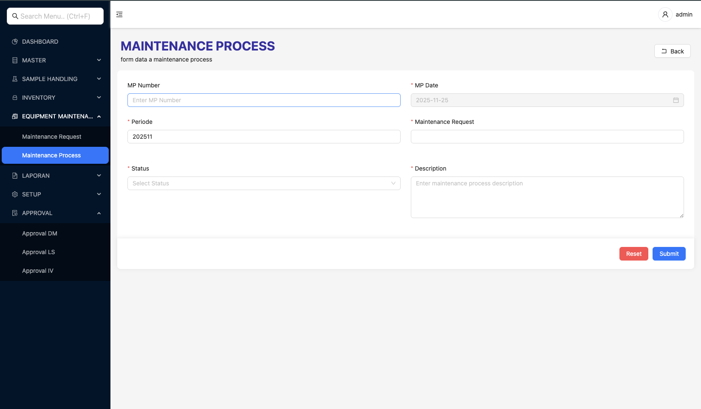Catatan: Form ini digunakan untuk mengeksekusi proses pemeliharaan peralatan berdasarkan Maintenance Request. Form ini mencatat tindakan pemeliharaan yang dilakukan dan hasil pemeriksaan peralatan.
Alur Proses - Process 2: Equipment Calibration
- Mulai → Manajemen Aset Supervisor memulai proses
- Membuat Program Kalibrasi
- Jadwal Kalibrasi (Data Store)
- Mengajukan Permintaan Kalibrasi
- Mengkonfirmasi Permintaan Kalibrasi (Manajer Lab)
- Melakukan Kalibrasi (Internal/External Kalibrasi)
- Laporan Kalibrasi (Message Flow)
- Melakukan Pemutakhiran Data Peralatan (Manajemen Aset Supervisor)
- Selesai
- Daftar peralatan
- Jadwal pemeliharaan
- Riwayat pemeliharaan
- Laporan kerusakan (jika ada)
- Status peralatan terbaru
- Program kalibrasi
- Jadwal kalibrasi
- Laporan kalibrasi
- Data peralatan terbaru
- Pemeliharaan dilakukan secara rutin sesuai jadwal
- Kalibrasi dilakukan sesuai program yang telah ditentukan
- Status peralatan harus selalu diperbarui
- Laporan kerusakan harus dibuat jika ditemukan kerusakan
12. Proses Approval
Deskripsi: Proses approval untuk memastikan kualitas dan validitas data sebelum digunakan dalam proses bisnis. Approval dilakukan untuk transaksi (Approval LS) dan data master (Approval DM).

- Approver: Melakukan review dan approval terhadap transaksi atau data master
- Admin: Membuat transaksi atau data master yang memerlukan approval
- Manager: Melakukan final approval untuk transaksi penting
Jenis Approval:
1. Approval LS (Laboratory Sample) - Approval Transaksi
Deskripsi: Approval LS digunakan untuk approval transaksi yang terkait dengan sample dan pengujian, seperti Testing Order, Planning Taking Sample, Taking Sample, Sample Handling, Testing Process, dan Testing Review.
Fungsi: Form ini digunakan untuk melakukan approval terhadap transaksi, termasuk:
- Detail Transaksi - Menampilkan informasi lengkap transaksi yang akan di-approve
- Detail Sample (untuk Testing Order) - Menampilkan daftar sample beserta detailnya
- Detail Price - Menampilkan breakdown harga (Gross, Discount, DPP, VAT, PPH, NET)
- Modal Approval - Form untuk melakukan approval dengan field:
- Status - Dropdown dengan opsi: CHECKED, VERIFIED, APPROVED, REJECT, CANCEL
- Approval Date - Tanggal approval
📸 Screenshot: Form Approval LS untuk Testing Order
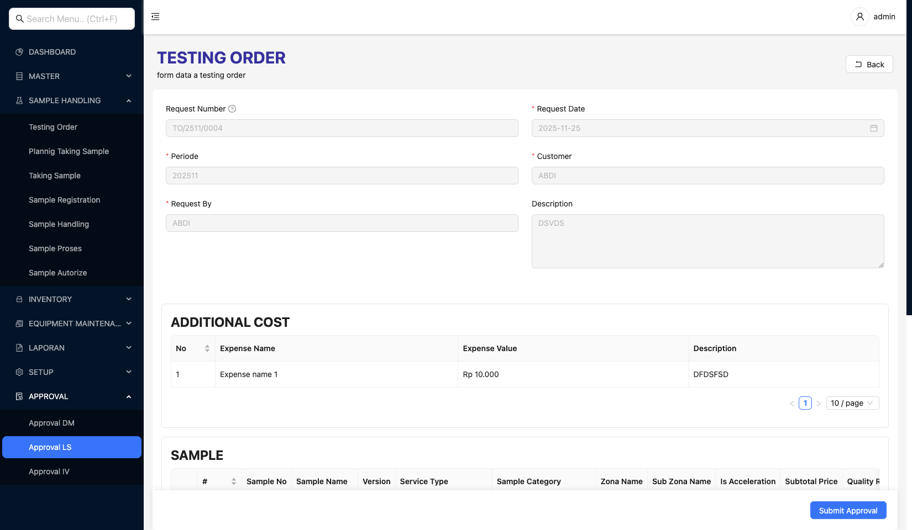Catatan: Form ini digunakan untuk melakukan approval terhadap Testing Order. Approver dapat melihat detail lengkap Testing Order, sample, dan harga sebelum memutuskan status approval (CHECKED, VERIFIED, APPROVED, REJECT, atau CANCEL).
2. Approval DM (Data Master) - Approval Data Master
Deskripsi: Approval DM digunakan untuk approval data master seperti Equipment, Sample, Formula, BOM (Bill of Materials), dan Formula Reference. Approval ini memastikan data master yang digunakan dalam sistem sudah divalidasi dan disetujui.
Fungsi: Form ini digunakan untuk melakukan approval terhadap data master, termasuk:
- Detail Data Master - Menampilkan informasi lengkap data master yang akan di-approve (Equipment, Sample, Formula, BOM, atau Formula Reference)
- Modal Approval - Form untuk melakukan approval dengan field:
- Status - Dropdown dengan opsi: CHECKED, VERIFIED, APPROVED, REJECT, CANCEL
- Approval Date - Tanggal approval
- Description - Deskripsi atau komentar approval (opsional)
📸 Screenshot: Form Approval DM untuk Equipment

Catatan: Form ini digunakan untuk melakukan approval terhadap data master Equipment. Approver dapat melihat detail lengkap Equipment sebelum memutuskan status approval (CHECKED, VERIFIED, APPROVED, REJECT, atau CANCEL). Approval DM juga digunakan untuk data master lainnya seperti Sample, Formula, BOM, dan Formula Reference.
Alur Proses Approval:
- Mulai → Admin/User membuat transaksi atau data master
- Transaksi/Data Master Dibuat - Status awal: Pending Approval
- Approval Request - Sistem mengirimkan notifikasi ke approver
- Approver Review - Approver melihat detail transaksi/data master
- Decision: Setujui?
- Ya:
- Pilih Status: CHECKED, VERIFIED, atau APPROVED
- Isi Approval Date
- Isi Description (opsional)
- Submit Approval
- Tidak:
- Pilih Status: REJECT atau CANCEL
- Isi Approval Date
- Isi Description (alasan penolakan)
- Submit Approval
- Ya:
- Update Status - Sistem memperbarui status transaksi/data master
- Decision: Semua Approval Selesai?
- Ya: Transaksi/Data Master dapat digunakan
- Tidak: Menunggu approval berikutnya
- Selesai
- Status approval transaksi/data master
- Riwayat approval (approver, tanggal, status)
- Notifikasi approval kepada user terkait
- Transaksi/data master yang telah disetujui dapat digunakan
- Approval dapat dilakukan secara bertahap (multi-level approval)
- Status approval menentukan apakah transaksi/data master dapat dilanjutkan
- Approval REJECT atau CANCEL memerlukan revisi dari pembuat transaksi/data master
- Riwayat approval tersimpan untuk audit trail
Integrasi Data
Deskripsi: Semua proses bisnis utama mengirimkan data ke sistem integrasi data untuk konsolidasi dan pelaporan.

Proses yang Terintegrasi:
- Administrasi Sampel Uji → Data permintaan pengujian, pembayaran, LHU
- Penanganan Sampel → Data pengolahan sampel, hasil pengujian, LHU
- Manajemen Persediaan → Data stock opname, penggunaan bahan uji, persediaan
- Manajemen Aset → Data pemeliharaan peralatan, kalibrasi, status peralatan
Integrasi Eksternal:
- API CIS: Integrasi untuk data pembayaran pelanggan
Role dan Tanggung Jawab
| Role | Tanggung Jawab |
|---|---|
| Pelanggan | Pendaftaran, mengisi form permintaan, pembayaran, mengakses portal, mengunduh LHU, feedback |
| Pelayanan Kepada Pelanggan Admin | Analisa permintaan, kalkulasi biaya, terbitkan tagihan, verifikasi pembayaran, siapkan dokumen, berikan LHU |
| Manager Teknis | KUP, analisa ketersediaan, disposisi teknis, buat jadwal pengambilan, verifikasi LHU |
| Analis | Analisa ketersediaan, persiapan pengujian, melakukan pengujian, kalibrasi, pemeliharaan peralatan |
| Penyelia (Supervisor) | Konfirmasi pengolahan sampel, konfirmasi hasil uji, konfirmasi rekonsiliasi |
| Admin Persediaan | Konfirmasi penggunaan, stock opname, monitoring, rekap, update data, disposal |
Glossary
Laporan Hasil Uji - Dokumen resmi yang berisi hasil pengujian sampel
Kaji Ulang Permintaan - Proses review teknis untuk menentukan kelayakan permintaan pengujian
Memorandum of Understanding - Perjanjian kerjasama antara laboratorium dan pelanggan
Sistem pembayaran dimana pelanggan membayar sebelum pengujian dilakukan
Sistem pembayaran dimana pelanggan membayar setelah pengujian selesai (biasanya untuk pelanggan MoU)
Surat Perintah Kerja - Dokumen yang mengatur jadwal dan detail pengambilan sampel
Pengujian yang dilakukan langsung di lokasi pengambilan sampel
Proses penghitungan fisik persediaan untuk memastikan kesesuaian dengan data sistem
Proses pengecekan dan penyesuaian akurasi peralatan pengujian
Customer Information System - Sistem informasi pelanggan yang terintegrasi